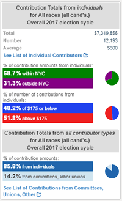

The map represents contributions from individuals (including candidates, their spouses, & family members) submitted to the NYC Campaign Finance Board (CFB) by each candidate's campaign, up through and including the latest filing period for the 2023 election cycle.
The residential addresses provided by the campaigns for these contributions were geocoded by CFB using the Geosupport system from NYC Department of City Planning. Note that if a campaign provided an incorrect address, or an employer's address rather than a home address, the mapped display of contribution patterns will be somewhat different than the actual locations of the contributions. Also, a small number of contributions are omitted from the map due to missing, incomplete, or incorrect street addresses in the original data provided to the Campaign Finance Board.
Contributions are summed and averaged by ZIP Code, neighborhood tabulation area, Council district, or election district using geographic boundaries provided by the NYC Department of City Planning and NYC Department of Information Technology and Telecommunications.
The map page also displays overall net contributions (contributions minus refunds) regardless of geography in an info box separate from the map (example at right). This box displays statistics on contributions from individuals such as percent from within NYC vs outside NYC & share of contributions at $250 or below vs above $250. The info box also displays statistics on contributions from all sources, displaying the share from individuals vs the combined total from political committees, labor unions, businesses, and any other sources.
The online map application was developed for CFB by the Center for Urban Research at the CUNY Graduate Center.